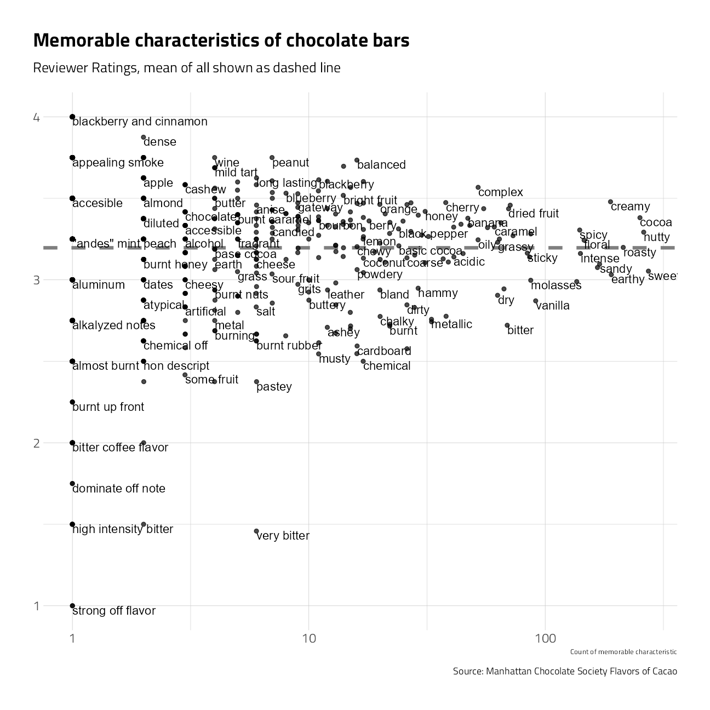

Chocolate bar ratings
Jim Gruman
January 17, 2022
Last updated: 2022-01-21
Checks: 7 0
Knit directory: myTidyTuesday/
This reproducible R Markdown analysis was created with workflowr (version 1.7.0). The Checks tab describes the reproducibility checks that were applied when the results were created. The Past versions tab lists the development history.
Great! Since the R Markdown file has been committed to the Git repository, you know the exact version of the code that produced these results.
Great job! The global environment was empty. Objects defined in the global environment can affect the analysis in your R Markdown file in unknown ways. For reproduciblity it’s best to always run the code in an empty environment.
The command set.seed(20210907) was run prior to running the code in the R Markdown file. Setting a seed ensures that any results that rely on randomness, e.g. subsampling or permutations, are reproducible.
Great job! Recording the operating system, R version, and package versions is critical for reproducibility.
Nice! There were no cached chunks for this analysis, so you can be confident that you successfully produced the results during this run.
Great job! Using relative paths to the files within your workflowr project makes it easier to run your code on other machines.
Great! You are using Git for version control. Tracking code development and connecting the code version to the results is critical for reproducibility.
The results in this page were generated with repository version 270c6c0. See the Past versions tab to see a history of the changes made to the R Markdown and HTML files.
Note that you need to be careful to ensure that all relevant files for the analysis have been committed to Git prior to generating the results (you can use wflow_publish or wflow_git_commit). workflowr only checks the R Markdown file, but you know if there are other scripts or data files that it depends on. Below is the status of the Git repository when the results were generated:
Ignored files:
Ignored: .Rhistory
Ignored: .Rproj.user/
Ignored: catboost_info/
Ignored: data/2021-11-27/
Ignored: data/2021-11-27glm_wf_final.rds
Ignored: data/CNHI_Excel_Chart.xlsx
Ignored: data/CommunityTreemap.jpeg
Ignored: data/Community_Roles.jpeg
Ignored: data/YammerDigitalDataScienceMembership.xlsx
Ignored: data/accountchurn.rds
Ignored: data/acs_poverty.rds
Ignored: data/advancedaccountchurn.rds
Ignored: data/airbnbcatboost.rds
Ignored: data/austinHomeValue.rds
Ignored: data/austinHomeValue2.rds
Ignored: data/australiaweather.rds
Ignored: data/baseballHRxgboost.rds
Ignored: data/baseballHRxgboost2.rds
Ignored: data/fmhpi.rds
Ignored: data/grainstocks.rds
Ignored: data/hike_data.rds
Ignored: data/nber_rs.rmd
Ignored: data/netflixTitles2.rds
Ignored: data/pets.rds
Ignored: data/pets2.rds
Ignored: data/spotifyxgboost.rds
Ignored: data/spotifyxgboostadvanced.rds
Ignored: data/us_states.rds
Ignored: data/us_states_hexgrid.geojson
Ignored: data/weatherstats_toronto_daily.csv
Ignored: gce-key.json
Untracked files:
Untracked: code/YammerReach.R
Untracked: code/work list batch targets.R
Unstaged changes:
Modified: code/_common.R
Note that any generated files, e.g. HTML, png, CSS, etc., are not included in this status report because it is ok for generated content to have uncommitted changes.
These are the previous versions of the repository in which changes were made to the R Markdown (analysis/2022_01_18.Rmd) and HTML (docs/2022_01_18.html) files. If you’ve configured a remote Git repository (see ?wflow_git_remote), click on the hyperlinks in the table below to view the files as they were in that past version.
| File | Version | Author | Date | Message |
|---|---|---|---|---|
| Rmd | 270c6c0 | opus1993 | 2022-01-21 | name chunks |
| Rmd | 743bf3d | opus1993 | 2022-01-21 | initial commit of chocolate bar ratings |
This week’s #TidyTuesday dataset is provided by Brandy Brelinski of the Manhattan Chocolate Society at the web site Flavors of Cacao and also at Will Canniford’s page on kaggle.
The web site notes:
From 2007-2016 the Manhattan Chocolate Society has impressively held over 65 focused tastings that examine what is responsible for particular characteristics in chocolate whether they are due to specific growing regions, cacao genetics, manufacturing or some other cause. Their ability to meet with and support chocolate makers, authors and experts in these intimate tastings has inspired us to continue our mission and makes us a unique member in the chocolate community.
tweetrmd::include_tweet("https://twitter.com/thomas_mock/status/1483236475370102787")The @R4DScommunity welcomes you to week 3 of #TidyTuesday! We're exploring Chocolate bar ratings!!
— Tom Mock (@thomas_mock) January 18, 2022
üìÅ https://t.co/sElb4fcv3u
üì∞ https://t.co/aHkFwfqyOj#r4ds #tidyverse #rstats #dataviz pic.twitter.com/emAV8jVLnw
Let’s build up some examples data visuals to showcase for ourselves here. First, load up packages:
suppressPackageStartupMessages({
library(tidyverse) # clean and transform rectangular data
library(tidymodels)
library(tidytext)
library(textrecipes)
library(poissonreg)
library(grumanlib) # my plot theme
})
source(here::here("code","_common.R"),
verbose = FALSE,
local = knitr::knit_global())
ggplot2::theme_set(theme_jim(base_size = 12))Lets load up the data
chocolate <- tidytuesdayR::tt_load("2022-01-18")$chocolate %>%
mutate(
cocoa = parse_number(cocoa_percent),
review_date = lubridate::ymd(paste(review_date, 1, 1, sep = "-"))
) %>%
separate(ingredients,
into = c("ingredient_complexity", "ingredients"),
convert = TRUE,
sep = "-"
) %>%
mutate(
Beans = str_detect(ingredients, "B"),
Sugar = str_detect(ingredients, "S"),
Sweetener = str_detect(ingredients, "S*"),
CocoaButter = str_detect(ingredients, "C"),
Lecithin = str_detect(ingredients, "L"),
Vanilla = str_detect(ingredients, "V"),
Salt = str_detect(ingredients, "Sa"),
) %>%
replace_na(list(
Beans = TRUE,
Sugar = FALSE,
Sweetener = FALSE,
CocoaButter = FALSE,
Lecithin = FALSE,
Vanilla = FALSE,
Salt = FALSE
)) %>%
select(
country_of_bean_origin,
most_memorable_characteristics,
review_date,
Beans,
Sugar,
Sweetener,
CocoaButter,
Lecithin,
Vanilla,
Salt,
rating,
cocoa
)
Downloading file 1 of 1: `chocolate.csv`caption <- "Source: Manhattan Chocolate Society Flavors of Cacao"A quick overview of the types of data in the dataframe:
skimr::skim(chocolate)| Name | chocolate |
| Number of rows | 2530 |
| Number of columns | 12 |
| _______________________ | |
| Column type frequency: | |
| character | 2 |
| Date | 1 |
| logical | 7 |
| numeric | 2 |
| ________________________ | |
| Group variables | None |
Variable type: character
| skim_variable | n_missing | complete_rate | min | max | empty | n_unique | whitespace |
|---|---|---|---|---|---|---|---|
| country_of_bean_origin | 0 | 1 | 4 | 21 | 0 | 62 | 0 |
| most_memorable_characteristics | 0 | 1 | 3 | 37 | 0 | 2487 | 0 |
Variable type: Date
| skim_variable | n_missing | complete_rate | min | max | median | n_unique |
|---|---|---|---|---|---|---|
| review_date | 0 | 1 | 2006-01-01 | 2021-01-01 | 2015-01-01 | 16 |
Variable type: logical
| skim_variable | n_missing | complete_rate | mean | count |
|---|---|---|---|---|
| Beans | 0 | 1 | 1.00 | TRU: 2530 |
| Sugar | 0 | 1 | 0.96 | TRU: 2436, FAL: 94 |
| Sweetener | 0 | 1 | 0.97 | TRU: 2443, FAL: 87 |
| CocoaButter | 0 | 1 | 0.66 | TRU: 1668, FAL: 862 |
| Lecithin | 0 | 1 | 0.19 | FAL: 2037, TRU: 493 |
| Vanilla | 0 | 1 | 0.14 | FAL: 2177, TRU: 353 |
| Salt | 0 | 1 | 0.01 | FAL: 2493, TRU: 37 |
Variable type: numeric
| skim_variable | n_missing | complete_rate | mean | sd | p0 | p25 | p50 | p75 | p100 | hist |
|---|---|---|---|---|---|---|---|---|---|---|
| rating | 0 | 1 | 3.20 | 0.45 | 1 | 3 | 3.25 | 3.5 | 4 | ▁▁▅▇▇ |
| cocoa | 0 | 1 | 71.64 | 5.62 | 42 | 70 | 70.00 | 74.0 | 100 | ▁▁▇▁▁ |
The pairwise correlations and histograms of the numeric features, colored by intervals of ratings scores:
chocolate %>%
select(
cocoa,
review_date,
rating
) %>%
GGally::ggpairs(
mapping = aes(color = cut_interval(rating, 5)),
progress = FALSE,
diag = list(continuous = GGally::wrap("barDiag", bins = 20))
) +
theme_bw() +
theme(panel.grid = element_blank()) +
labs(caption = caption)The chocolate bar ratings in this set range from 1 to 4 and the cocoa proportion ranges from 42 to 100%. I’d like to investigate how best to handle the bounded positive range of ratings values, and what contribution is inferred by each memorable characteristic.
What are the most common words used to describe the most memorable characteristics of each chocolate sample?
chocolate %>%
unnest_tokens(
output = word,
input = most_memorable_characteristics,
token = "regex",
pattern = ","
) %>%
mutate(word = str_squish(word)) %>%
group_by(word) %>%
summarise(
n = n(),
rating = mean(rating)
) %>%
ggplot(aes(n, rating)) +
geom_hline(
yintercept = mean(chocolate$rating), lty = 2,
color = "gray50", size = 1.5
) +
geom_jitter(alpha = 0.7) +
geom_text(aes(label = word),
check_overlap = TRUE,
vjust = "top", hjust = "left"
) +
scale_x_log10() +
labs(
caption = caption,
title = "Memorable characteristics of chocolate bars",
subtitle = "Reviewer Ratings, mean of all shown as dashed line", y = NULL, x = "Count of memorable characteristic"
) +
grumanlib::theme_jim()
Build a couple of models to predict how the rating is influenced by memorable characteristics
chocolate <- chocolate %>%
mutate(integer_rating = as.integer(rating * 4))
set.seed(123)
choco_split <- initial_split(chocolate, strata = rating)
choco_train <- training(choco_split)
choco_test <- testing(choco_split)
choc_recipe <-
recipe(integer_rating ~ most_memorable_characteristics, data = choco_train) %>%
step_tokenize(most_memorable_characteristics) %>%
step_tokenfilter(most_memorable_characteristics, max_tokens = 100) %>%
step_tf(most_memorable_characteristics,
weight_scheme = "binary"
) %>%
step_dummy(all_nominal_predictors()) %>%
step_normalize(all_numeric_predictors()) %>%
step_zv(all_predictors())For the bounded, positive integer dependent variable rating, let’s use the poisson regression engine from the general linear model.
pois_spec <- poisson_reg() %>%
set_mode("regression") %>%
set_engine("glm")pois_wf <- workflow() %>%
add_recipe(choc_recipe) %>%
add_model(pois_spec)
pois_fit <- pois_wf %>% fit(choco_train)In the test set
augment(pois_fit,
new_data = chocolate,
type.predict = "response"
) %>%
ggplot(aes(rating, .pred / 4)) +
geom_point(alpha = 0.1) +
geom_text(
data = . %>% slice_max(.pred, n = 5),
aes(label = most_memorable_characteristics),
check_overlap = TRUE,
vjust = "top", hjust = "left"
) +
geom_text(
data = . %>% slice_min(.pred, n = 5),
aes(label = most_memorable_characteristics),
check_overlap = TRUE,
vjust = "top", hjust = "left"
) +
geom_text(
data = . %>% filter(integer_rating / 4 == 1.0),
aes(label = most_memorable_characteristics),
check_overlap = TRUE,
vjust = "top", hjust = "left"
) +
geom_abline(
slope = 1,
size = 1,
color = "grey40",
lty = 2
) +
scale_x_continuous(limits = c(1, 4.5)) +
scale_y_continuous(limits = c(1, 4)) +
labs(
title = "Predicting the bar rating using Poission from Memorable Characteristics",
x = "Actual", y = "Predicted"
)augment(pois_fit,
new_data = choco_test,
type.predict = "response"
) %>%
rmse(truth = rating, estimate = .pred / 4)As a prediction model, the poisson glm by itself isn’t great. Even so, we can look at the model coefficients to get a feel for the working of the model and comparing it with our own understanding.
pois_fit %>%
tidy() %>%
group_by(estimate > 0) %>%
slice_max(abs(estimate), n = 10) %>%
ungroup() %>%
filter(term != "(Intercept)") %>%
mutate(
term = str_remove(term, "tf_most_memorable_characteristics_"),
term = str_remove(term, "TRUE")
) %>%
ggplot(aes(estimate,
fct_reorder(term, estimate),
fill = estimate > 0
)) +
geom_col() +
scale_fill_discrete(labels = c("low ratings", "high ratings")) +
labs(
y = NULL, fill = "More from...",
caption = caption,
title = "Memorable Characteristics of Chocolate Bars",
subtitle = "The influence of words on sample ratings, Poisson Model"
) +
theme(panel.grid.major.y = element_blank())Julia Silge often works with svm models in her learning blog. Let’s give it a go here, but with my slightly different recipe:
svm_spec <-
svm_linear() %>%
set_mode("regression")svm_wf <- workflow() %>%
add_recipe(choc_recipe) %>%
add_model(svm_spec)
svm_fit <- svm_wf %>% fit(choco_train)augment(svm_fit,
new_data = choco_test,
type.predict = "response"
) %>%
rmse(truth = rating, estimate = .pred / 4)Ok, so the error rate with the svm is more or less the same.
Let’s have a look at the words most influential on ratings in the svm model coefficients:
svm_fit %>%
tidy() %>%
group_by(estimate > 0) %>%
slice_max(abs(estimate), n = 10) %>%
ungroup() %>%
filter(term != "Bias") %>%
mutate(
term = str_remove(term, "tf_most_memorable_characteristics_"),
term = str_remove(term, "TRUE")
) %>%
ggplot(aes(estimate,
fct_reorder(term, estimate),
fill = estimate > 0
)) +
geom_col() +
scale_fill_discrete(labels = c("low ratings", "high ratings")) +
labs(
y = NULL, fill = "More from...",
caption = caption,
title = "Memorable Characteristics of Chocolate Bars",
subtitle = "The influence of words on sample ratings, SVM Model"
) +
theme(panel.grid.major.y = element_blank())
It’s interesting to me how different the results are between the two algorithms.
tweetrmd::include_tweet("https://twitter.com/leeolney3/status/1483378919957008387")#TidyTuesday week 3, data from Flavors of Cacao by way of Georgios and Kelsey. This week I learned inline boxplot from https://t.co/RDFvUZo8FV#Rstats code: https://t.co/uHhvaEwsMq pic.twitter.com/t9l9kW6SDW
— Lee Olney (@leeolney3) January 18, 2022
tweetrmd::include_tweet("https://twitter.com/danoehm/status/1483698034748039169")#TidyTuesday week 3: The best üç´ is...
— Dan Oehm üå≤‚õ∞Ô∏è (@danoehm) January 19, 2022
Rich, creamy, fruity, and spicy!
I fit a simple model to see which words were more or less associated with higher ratings. I focused on the 20 most prevalent words#RStats #ggplot #dataviz pic.twitter.com/XVW1x5mvsp
tweetrmd::include_tweet("https://twitter.com/quite_grey/status/1483796675181350912")Let me take your tastebuds on a journey. We begin at Why Bother and ease through to our destination, WTF.
— not quite my grey (@quite_grey) January 19, 2022
Code: https://t.co/MzGi93Y56L#TidyTuesday #RStats #DataViz #Chocolate pic.twitter.com/17xSO0wHkP
sessionInfo()R version 4.1.2 (2021-11-01)
Platform: x86_64-w64-mingw32/x64 (64-bit)
Running under: Windows 10 x64 (build 22000)
Matrix products: default
locale:
[1] LC_COLLATE=English_United States.1252
[2] LC_CTYPE=English_United States.1252
[3] LC_MONETARY=English_United States.1252
[4] LC_NUMERIC=C
[5] LC_TIME=English_United States.1252
attached base packages:
[1] stats graphics grDevices utils datasets methods base
other attached packages:
[1] grumanlib_0.1.0.9999 poissonreg_0.1.1 textrecipes_0.4.1
[4] tidytext_0.3.2 yardstick_0.0.9 workflowsets_0.1.0
[7] workflows_0.2.4 tune_0.1.6 rsample_0.1.1
[10] recipes_0.1.17 parsnip_0.1.7 modeldata_0.1.1
[13] infer_1.0.0 dials_0.0.10 scales_1.1.1
[16] broom_0.7.11 tidymodels_0.1.4 forcats_0.5.1
[19] stringr_1.4.0 dplyr_1.0.7 purrr_0.3.4
[22] readr_2.1.1 tidyr_1.1.4 tibble_3.1.6
[25] ggplot2_3.3.5 tidyverse_1.3.1 workflowr_1.7.0
loaded via a namespace (and not attached):
[1] readxl_1.3.1 backports_1.4.1 systemfonts_1.0.3
[4] selectr_0.4-2 plyr_1.8.6 repr_1.1.4
[7] tidytuesdayR_1.0.1.9000 splines_4.1.2 listenv_0.8.0
[10] SnowballC_0.7.0 usethis_2.1.5 digest_0.6.29
[13] foreach_1.5.1 htmltools_0.5.2 viridis_0.6.2
[16] fansi_1.0.2 magrittr_2.0.1 memoise_2.0.1
[19] tzdb_0.2.0 globals_0.14.0 modelr_0.1.8
[22] gower_0.2.2 vroom_1.5.7 R.utils_2.11.0
[25] hardhat_0.1.6 colorspace_2.0-2 skimr_2.1.3
[28] rvest_1.0.2 textshaping_0.3.6 haven_2.4.3
[31] xfun_0.29 callr_3.7.0 crayon_1.4.2
[34] jsonlite_1.7.3 survival_3.2-13 iterators_1.0.13
[37] glue_1.6.0 gtable_0.3.0 ipred_0.9-12
[40] R.cache_0.15.0 tweetrmd_0.0.9 future.apply_1.8.1
[43] GGally_2.1.2 DBI_1.1.2 Rcpp_1.0.8
[46] viridisLite_0.4.0 bit_4.0.4 GPfit_1.0-8
[49] lava_1.6.10 prodlim_2019.11.13 httr_1.4.2
[52] RColorBrewer_1.1-2 ellipsis_0.3.2 farver_2.1.0
[55] reshape_0.8.8 R.methodsS3_1.8.1 pkgconfig_2.0.3
[58] nnet_7.3-16 sass_0.4.0 dbplyr_2.1.1
[61] utf8_1.2.2 here_1.0.1 labeling_0.4.2
[64] tidyselect_1.1.1 rlang_0.4.12 DiceDesign_1.9
[67] later_1.3.0 munsell_0.5.0 cellranger_1.1.0
[70] tools_4.1.2 cachem_1.0.6 cli_3.1.0
[73] generics_0.1.1 evaluate_0.14 fastmap_1.1.0
[76] yaml_2.2.1 ragg_1.2.1 bit64_4.0.5
[79] processx_3.5.2 knitr_1.37 fs_1.5.2
[82] future_1.23.0 whisker_0.4 R.oo_1.24.0
[85] xml2_1.3.3 tokenizers_0.2.1 compiler_4.1.2
[88] rstudioapi_0.13 curl_4.3.2 reprex_2.0.1
[91] lhs_1.1.3 bslib_0.3.1 stringi_1.7.6
[94] highr_0.9 ps_1.6.0 lattice_0.20-45
[97] Matrix_1.3-4 styler_1.6.2 conflicted_1.1.0
[100] vctrs_0.3.8 pillar_1.6.4 lifecycle_1.0.1
[103] furrr_0.2.3 LiblineaR_2.10-12 jquerylib_0.1.4
[106] httpuv_1.6.5 R6_2.5.1 promises_1.2.0.1
[109] gridExtra_2.3 janeaustenr_0.1.5 parallelly_1.30.0
[112] codetools_0.2-18 MASS_7.3-54 assertthat_0.2.1
[115] rprojroot_2.0.2 withr_2.4.3 parallel_4.1.2
[118] hms_1.1.1 grid_4.1.2 rpart_4.1-15
[121] timeDate_3043.102 class_7.3-19 rmarkdown_2.11
[124] git2r_0.29.0 getPass_0.2-2 pROC_1.18.0
[127] base64enc_0.1-3 lubridate_1.8.0